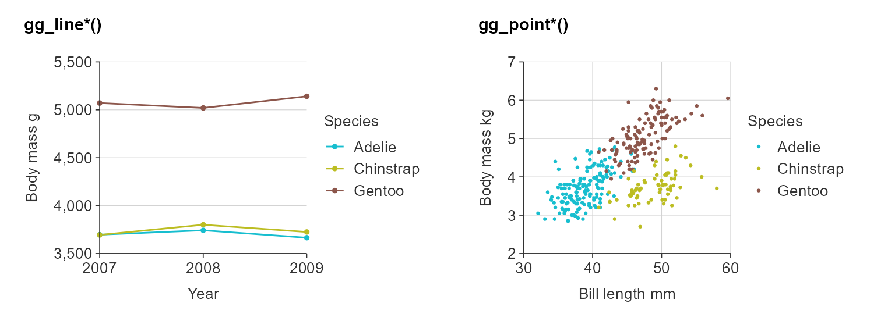

Purpose
simplevis is a package of wrapper functions to make ‘ggplot2’ and ‘leaflet’ visualisation easier and prettier.
Overview
simplevis provides the following types of ggplot visualisation:
Graph:
- horizontal bar (
hbar) - vertical bar (
vbar) - line plot (
line) - point plot (
point) - boxplot (
boxplot)
Map:
- sf (
sf)
Each visualisation type has a family of generally 4 functions.
The function name specifies whether or not a ggplot is to be coloured by a variable, facetted by a variable, or neither or both of these. Colouring by a variable means that different values of a selected variable are to have different colours. Facetting means different values of a selected variable are to have there own mini-graph, and these are to be placed alongside each other.
These 4 functions follow the same structure as the hbar functions listed below:
-
ggplot_hbar(): a horizontal bar graph. -
ggplot_hbar_col(): a horizontal bar graph that is coloured by a variable. -
ggplot_hbar_facet(): a facetted horizontal bar graph. -
ggplot_hbar_col_facet()a facetted horizontal bar graph that is coloured by a variable.
For different types of graph, just replace hbar with line, point, vbar, boxplot or sf.
In general, required arguments (i.e. specifications) to functions are:
datax_vary_var
If you are using a _col or _col_facet function:
col_var
If you are using a _facet or _col_facet function:
facet_var
It is always recommended to add a title, x_title and y_title too.
Ggplot graphs
Graphs that are not coloured by a variable.
Identify the function that you need, then provide the data (aggregated, if necessary) and an x_var and a y_var.
plot_data <- ggplot2::diamonds %>% slice_sample(prop = 0.05) %>% as_tibble() plot_data #> # A tibble: 2,697 x 10 #> carat cut color clarity depth table price x y z #> <dbl> <ord> <ord> <ord> <dbl> <dbl> <int> <dbl> <dbl> <dbl> #> 1 0.33 Premium H VVS2 61.6 58 854 4.45 4.42 2.73 #> 2 0.46 Ideal J VS1 62.6 53.9 851 4.92 4.95 3.09 #> 3 0.7 Very Good E SI1 62.9 57 2349 5.6 5.66 3.54 #> 4 0.31 Very Good G VS2 61 56 544 4.35 4.37 2.66 #> 5 0.28 Ideal G IF 60.9 57 650 4.24 4.27 2.59 #> 6 0.31 Very Good E SI1 62.8 57 544 4.32 4.34 2.72 #> 7 1 Ideal D SI2 61.5 56 4956 6.45 6.41 3.95 #> 8 1.82 Premium I VS1 61.4 60 13813 7.8 7.83 4.8 #> 9 0.23 Very Good D VVS2 59.6 61 499 3.99 4.03 2.39 #> 10 1.01 Good G VS2 63.7 56 5701 6.4 6.32 4.05 #> # … with 2,687 more rows ggplot_point(plot_data, carat, price)

plot_data <- ggplot2::diamonds %>% group_by(cut) %>% summarise(average_price = mean(price)) %>% mutate(average_price = average_price / 1000) %>% mutate(cut = stringr::str_to_sentence(cut)) %>% as_tibble() plot_data #> # A tibble: 5 x 2 #> cut average_price #> <chr> <dbl> #> 1 Fair 4.36 #> 2 Good 3.93 #> 3 Very good 3.98 #> 4 Premium 4.58 #> 5 Ideal 3.46 ggplot_hbar(plot_data, x_var = average_price, y_var = cut, title = "Average diamond price by cut", x_title = "Average price ($US thousands)", y_title = "Cut")

plot_data <- storms %>% group_by(year) %>% summarise(average_wind = mean(wind)) %>% as_tibble() plot_data #> # A tibble: 41 x 2 #> year average_wind #> <dbl> <dbl> #> 1 1975 50.9 #> 2 1976 59.9 #> 3 1977 54.0 #> 4 1978 40.5 #> 5 1979 48.7 #> 6 1980 53.7 #> 7 1981 56.6 #> 8 1982 49.5 #> 9 1983 47.0 #> 10 1984 51.4 #> # … with 31 more rows ggplot_vbar(plot_data, x_var = year, y_var = average_wind)

plot_data <- storms %>% group_by(year) %>% summarise(wind = mean(wind)) %>% as_tibble() plot_data #> # A tibble: 41 x 2 #> year wind #> <dbl> <dbl> #> 1 1975 50.9 #> 2 1976 59.9 #> 3 1977 54.0 #> 4 1978 40.5 #> 5 1979 48.7 #> 6 1980 53.7 #> 7 1981 56.6 #> 8 1982 49.5 #> 9 1983 47.0 #> 10 1984 51.4 #> # … with 31 more rows ggplot_line(plot_data, x_var = year, y_var = wind)

Note the boxplot functions transform the data to boxplot statistics by default.
plot_data <- iris %>% mutate(Species = stringr::str_to_sentence(Species)) %>% as_tibble() plot_data #> # A tibble: 150 x 5 #> Sepal.Length Sepal.Width Petal.Length Petal.Width Species #> <dbl> <dbl> <dbl> <dbl> <chr> #> 1 5.1 3.5 1.4 0.2 Setosa #> 2 4.9 3 1.4 0.2 Setosa #> 3 4.7 3.2 1.3 0.2 Setosa #> 4 4.6 3.1 1.5 0.2 Setosa #> 5 5 3.6 1.4 0.2 Setosa #> 6 5.4 3.9 1.7 0.4 Setosa #> 7 4.6 3.4 1.4 0.3 Setosa #> 8 5 3.4 1.5 0.2 Setosa #> 9 4.4 2.9 1.4 0.2 Setosa #> 10 4.9 3.1 1.5 0.1 Setosa #> # … with 140 more rows ggplot_boxplot(plot_data, x_var = Species, y_var = Petal.Length)

Graphs that are coloured by a variable
To colour by a variable, use a _col function
plot_data <- ggplot2::diamonds %>% slice_sample(prop = 0.05) %>% as_tibble() plot_data #> # A tibble: 2,697 x 10 #> carat cut color clarity depth table price x y z #> <dbl> <ord> <ord> <ord> <dbl> <dbl> <int> <dbl> <dbl> <dbl> #> 1 2.23 Premium J SI1 62.4 59 14258 8.36 8.33 5.21 #> 2 0.580 Ideal F VVS1 61.6 57 2728 5.33 5.38 3.3 #> 3 0.72 Premium D VS2 61.1 60 2721 5.74 5.69 3.49 #> 4 0.32 Ideal J VS1 62 54.7 442 4.39 4.42 2.73 #> 5 1.01 Good G VS2 63.6 60 5599 6.3 6.35 4.02 #> 6 1.21 Ideal E IF 61.8 56 17353 6.81 6.88 4.23 #> 7 1.2 Premium F SI1 60.2 58 6604 6.9 6.86 4.14 #> 8 1.5 Very Good I VVS2 59.7 60 10551 7.46 7.62 4.5 #> 9 1.26 Ideal H VS1 61.5 59 7845 6.94 6.91 4.26 #> 10 0.49 Premium G SI2 59.4 60 1084 5.17 5.14 3.06 #> # … with 2,687 more rows ggplot_point_col(plot_data, x_var = carat, y_var = price, col_var = color)

plot_data <- storms %>% mutate(status = stringr::str_to_sentence(status)) %>% group_by(year, status) %>% summarise(wind = mean(wind)) %>% as_tibble() ggplot_line_col(plot_data, x_var = year, y_var = wind, col_var = status)

plot_data <- ggplot2::diamonds %>% group_by(cut, clarity) %>% summarise(average_price = mean(price)) %>% mutate(average_price = average_price / 1000) %>% mutate(cut = stringr::str_to_sentence(cut)) %>% as_tibble() plot_data #> # A tibble: 40 x 3 #> cut clarity average_price #> <chr> <ord> <dbl> #> 1 Fair I1 3.70 #> 2 Fair SI2 5.17 #> 3 Fair SI1 4.21 #> 4 Fair VS2 4.17 #> 5 Fair VS1 4.17 #> 6 Fair VVS2 3.35 #> 7 Fair VVS1 3.87 #> 8 Fair IF 1.91 #> 9 Good I1 3.60 #> 10 Good SI2 4.58 #> # … with 30 more rows ggplot_hbar_col(plot_data, x_var = average_price, y_var = cut, col_var = clarity)

Graphs that are facetted by a variable
To facet by a variable, use a _facet function.
plot_data <- ggplot2::diamonds %>% mutate(cut = stringr::str_to_sentence(cut)) %>% group_by(cut, clarity) %>% summarise(average_price = mean(price)) %>% mutate(average_price = average_price / 1000) %>% as_tibble() plot_data #> # A tibble: 40 x 3 #> cut clarity average_price #> <chr> <ord> <dbl> #> 1 Fair I1 3.70 #> 2 Fair SI2 5.17 #> 3 Fair SI1 4.21 #> 4 Fair VS2 4.17 #> 5 Fair VS1 4.17 #> 6 Fair VVS2 3.35 #> 7 Fair VVS1 3.87 #> 8 Fair IF 1.91 #> 9 Good I1 3.60 #> 10 Good SI2 4.58 #> # … with 30 more rows ggplot_hbar_facet(plot_data, x_var = average_price, y_var = cut, facet_var = clarity)

Graphs that are coloured by a variable and facetted by a variable.
facet by a variable, use a _col_facet function.
plot_data <- ggplot2::diamonds %>% mutate(cut = stringr::str_to_sentence(cut)) %>% group_by(cut, clarity, color) %>% summarise(average_price = mean(price)) %>% mutate(average_price = round(average_price / 1000, 1)) ggplot_hbar_col_facet(plot_data, x_var = average_price, y_var = color, col_var = clarity, facet_var = cut)

ggplot maps
simplevis provides simple feature (sf) maps (i.e. maps with point, line or polygon features).
Spatial-temporal array (i.e. stars) maps may be supported in future.
The following functions are available:
ggplot_sfggplot_sf_colggplot_sf_facetggplot_sf_col_facet
These functions work in the same way as the ggplot graph functions, but with the following key differences:
- Data must be provided in the format of an
sfobject. - Data must be of
POINT/MULTIPOINT,LINESTRING/MULTILINESTRING, orPOLYGON/MULTIPOLYGONgeometry types - Data can have any coordinate reference system (CRS), but it must be defined
- No
x_varandy_varvariables are required, because x_var and y_var are already implicity within the geometry column of an sf object - There is a
bordersspecification, which allows for borders (i.e. country/state/region/coastline) to be added to the map. An example New Zealand sf object (nz) has been provided with the package to demonstrate this.
example_sf_point #> Simple feature collection with 112 features and 3 fields #> Geometry type: POINT #> Dimension: XY #> Bounding box: xmin: 1175354 ymin: 4853914 xmax: 2025939 ymax: 6096100 #> CRS: EPSG:2193 #> First 10 features: #> site_id median trend_category geometry #> 1 ARC-00001 0.0140 Improving POINT (1735609 5916179) #> 2 ARC-00008 0.0610 Improving POINT (1753479 5976281) #> 3 ARC-00013 0.1310 Improving POINT (1742066 5915382) #> 4 ARC-00014 0.9900 Improving POINT (1764285 5907017) #> 5 ARC-00015 1.0300 Improving POINT (1767401 5907336) #> 6 ARC-00016 0.2980 Improving POINT (1768314 5908177) #> 7 ARC-00017 0.3550 Improving POINT (1751305 5933319) #> 8 ARC-00018 0.7350 Indeterminate POINT (1769952 5912814) #> 9 ARC-00019 0.5000 Improving POINT (1769452 5910614) #> 10 ARC-00026 0.1295 Improving POINT (1748608 5953465) ggplot_sf(example_sf_point, point_size = 0.25)

nz #> Simple feature collection with 7 features and 1 field #> Geometry type: MULTIPOLYGON #> Dimension: XY #> Bounding box: xmin: 166.4262 ymin: -47.28988 xmax: 178.5505 ymax: -34.39357 #> CRS: EPSG:4326 #> name geometry #> 1 South Island or Te Waipounamu MULTIPOLYGON (((166.5461 -4... #> 2 North Island or Te Ika-a-Maui MULTIPOLYGON (((173.014 -34... #> 3 Stewart Island/Rakiura MULTIPOLYGON (((167.8694 -4... #> 4 Great Barrier Island (Aotea Island) MULTIPOLYGON (((175.3966 -3... #> 5 Resolution Island MULTIPOLYGON (((166.6788 -4... #> 6 Rangitoto ke te tonga (D'Urville Island) MULTIPOLYGON (((173.9532 -4... #> 7 Secretary Island MULTIPOLYGON (((166.9634 -4... ggplot_sf(example_sf_point, borders = nz, point_size = 0.25)

example_sf_polygon #> Simple feature collection with 963 features and 2 fields #> Geometry type: MULTIPOLYGON #> Dimension: XY #> Bounding box: xmin: 1090000 ymin: 4748153 xmax: 2089541 ymax: 6194182 #> CRS: EPSG:2193 #> First 10 features: #> grid_id density geometry #> 1 12 0.000 MULTIPOLYGON (((1199950 481... #> 2 14 0.000 MULTIPOLYGON (((1249363 482... #> 3 28 110.454 MULTIPOLYGON (((1259922 485... #> 4 88 58.405 MULTIPOLYGON (((1219940 492... #> 5 89 62.744 MULTIPOLYGON (((1239931 492... #> 6 90 89.362 MULTIPOLYGON (((1259922 492... #> 7 91 6.112 MULTIPOLYGON (((1279913 492... #> 8 135 0.000 MULTIPOLYGON (((1149972 497... #> 9 151 0.000 MULTIPOLYGON (((1139977 499... #> 10 167 0.000 MULTIPOLYGON (((1149972 501... ggplot_sf_col(example_sf_polygon, col_var = density, borders = nz)

ggplot_sf_facet(example_sf_point, facet_var = trend_category, borders = nz, point_size = 0.5)

ggplot_sf_col_facet(example_sf_point, col_var = trend_category, facet_var = trend_category, borders = nz, point_size = 0.5, pal = c("#4575B4", "#D3D3D3", "#D73027"), title = "Site trends, 1990\u201317")

leaflet maps
simplevis also provides sf leaflet maps.
These work in the same way as the ggplot map functions, but with no borders arguments.
Arguments have been aligned with simplevis ggplot wrapping functions (e.g. point_size = radius, line_size = weight, alpha = fillOpacity)
Spatial-temporal array (i.e. stars) maps may be supported in future.
leaflet_sf(data = example_sf_polygon)
leaflet_sf_col(example_sf_polygon, col_var = density)